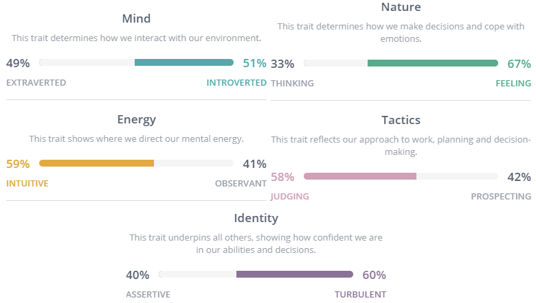

Personality Profile
Myer-Briggs Test
The Myers-Briggs test demonstrates how I perceive the world and make decisions in accordance to situations.
This test has given me insight on my; direction of energy, perception of information, how I process information, implementation of reflection.
I think these results are generally well rounded and will make myself compatible with a variety of team members, saying this I feel that my “Judging” trait will clash with someone who has a “Prospecting” approach to a task. I feel that those with a prospecting trait could offer an alternate solution to a problem which is something I value.
When forming a team, I believe it would be beneficial to find members who have differing personality traits to mine as despite myself being well rounded, they may offer new opportunities and new styles of thinking which will benefit the group as a whole.
Learning Style Test

My learning style results has given me insight on my most dominant styles of learning. Being able to Visually and Physically learn something benefits me as I can spatially understand something.
In a team, I may be more prone to drawing diagrams as a way of presenting information. This may also help others develop an understanding of the processes involved in order to reach an end goal.
When forming a team, I feel that I should try find members who have a similar learning style to myself in order to avoid confusion and conflicting interests.
Big Five Personality Test

The ‘Big Five Personality test’ allows me to see my Openness, Conscientiousness, Extraversion, Agreeableness, and Neuroticism. The test has shown that I think in abstract and complex ways whilst having self-discipline in order to pursue my goals.
My team may have my conscientiousness dominate with organisation and control, this can be seen as both a negative and positive. In terms of agreeableness, I have a tendency to put others first; this means that I will always be open to new ideas allowing everyone to contribute.
I believe I should try and find members who have similar personality dimensions but should also be open to those who might be lacking in areas where I excel. For example, someone who has a low score in conscientiousness is more likely to be side-tracked, I may be able to help them develop more interest in the specific topic by finding what they are passionate about.